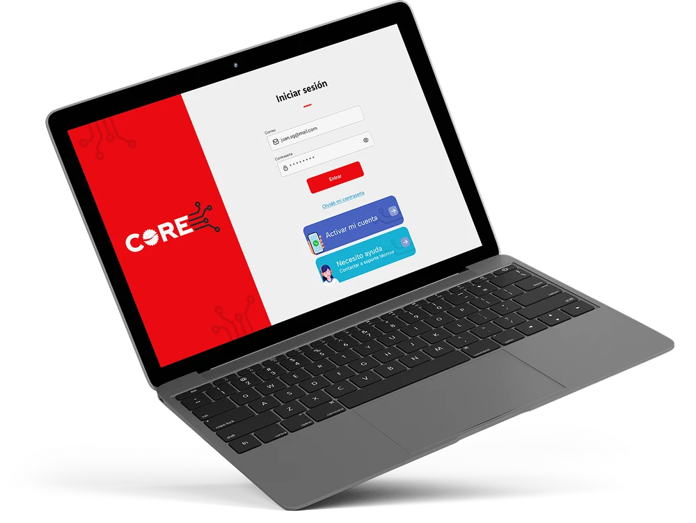
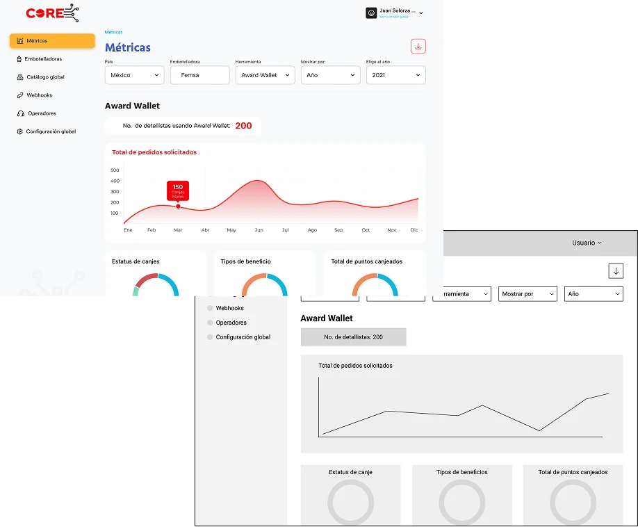
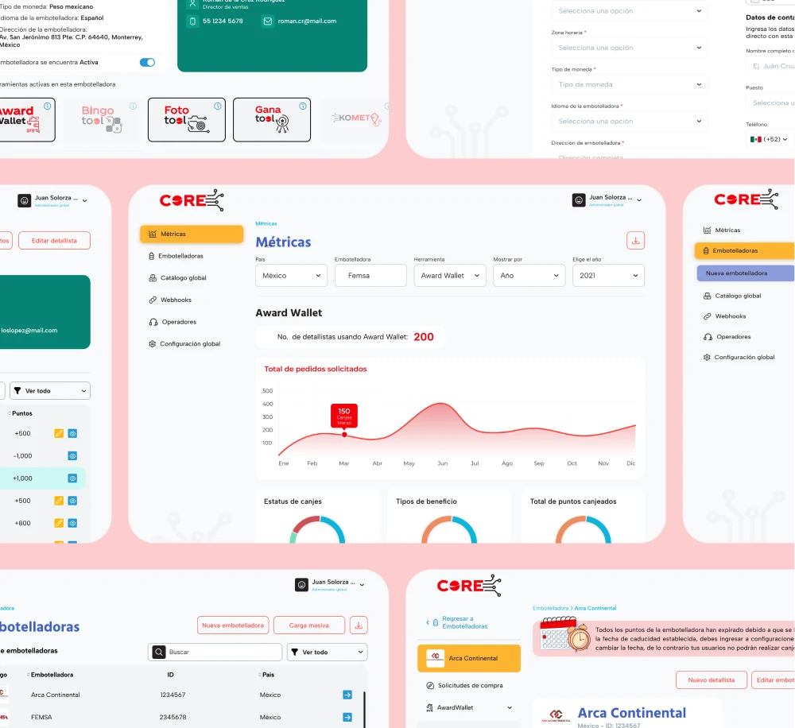
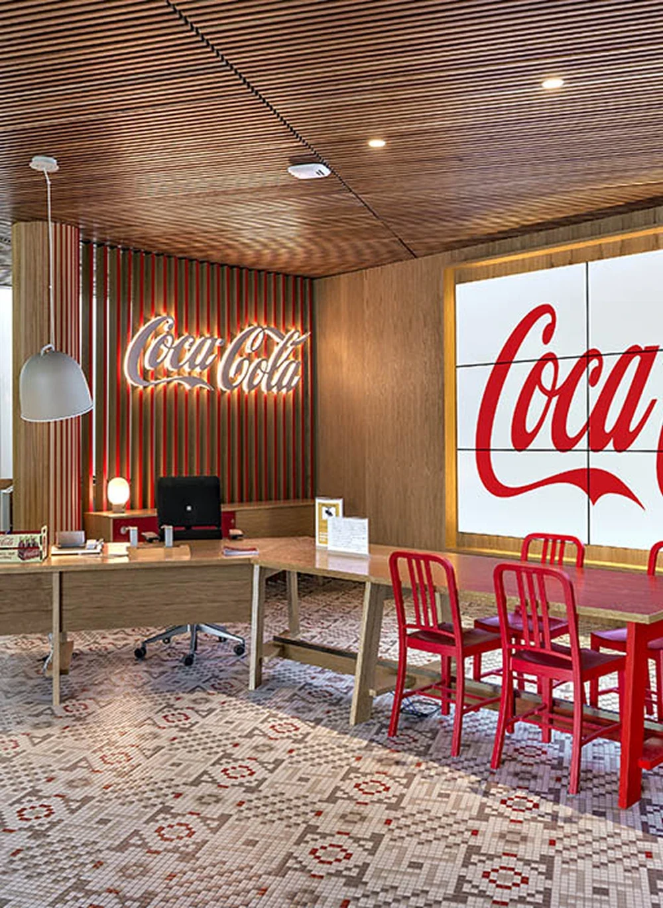

Market Excellence Toolbox
CORE: un dashboard interno que centraliza productos y comercios para optimizar la gestión de datos, impulsar ventas y recompensar a los detallistas.

La información de productos y objetivos de los detallistas estaba dispersa en múltiples plataformas. Eso complicaba el seguimiento de metas y la asignación de recompensas, y les impedía a los detallistas ver con claridad su desempeño y sus beneficios.
Información de productos y comercios en una única plataforma.
Mejorar la accesibilidad y claridad de la información para los detallistas.
Facilitar la asignación y el seguimiento de objetivos.
Un sistema de recompensas que motive a cumplir las metas.
Que los operadores creen objetivos y gestionen puntos y recompensas desde un solo lugar, con más eficiencia operativa.
No solo mejorar la gestión interna: fortalecer la relación con los detallistas e incrementar las ventas.
Cinco fases,
un solo dashboard
Empatizar
Preguntas a 4 stakeholders sobre la dificultad para gestionar datos de detallistas, las recompensas más motivadoras y los resultados esperados; y a 5 usuarios, sobre reportes, notificaciones y sus herramientas actuales.

Definir
Reuní las respuestas (cómo gestionan hoy los datos, qué reportes necesitan y qué los frena) en un affinity map de éxitos, oportunidades y puntos de dolor. Todo apuntó a lo mismo: datos dispersos, interfaces complejas y alertas poco claras.
Accesibilidad: CORE debe ser accesible para todos los empleados, sin importar su nivel técnico.
Affinity mapIntegración: CORE debe unir todos los sistemas de datos existentes para una experiencia fluida.
Affinity mapTransparencia: datos claros y precisos sobre rendimiento y objetivos.
Affinity mapColaboración: funciones que promuevan el trabajo entre equipos internos.
Affinity mapCentralizar en una sola plataforma todos los datos relevantes, simplificando acceso y administración.
Affinity mapUna interfaz más intuitiva que facilite la navegación.
Affinity mapAutomatizar la generación de reportes y análisis en tiempo real.
Affinity mapNotificaciones personalizables para dar seguimiento a los objetivos.
Affinity mapDatos dispersos en plataformas fragmentadas dificultan decidir y administrar objetivos.
Affinity mapPlataformas actuales complicadas y poco intuitivas que ralentizan el trabajo.
Affinity mapSin un sistema unificado para administrar datos y dar seguimiento a objetivos.
Affinity mapNotificaciones ineficientes: las alertas no son claras.
Affinity mapIdear
Wireframes de baja fidelidad enfocados en la estructura (reportes, paneles, alertas de objetivos y recompensas), una navegación intuitiva y la prioridad de la información según su frecuencia de uso.

Prototipar
Alta fidelidad con el rojo y blanco de la marca y neutros para las áreas de trabajo, tipografía legible para leer datos rápido y componentes coherentes, de botones a gráficas de rendimiento.

Accesibilidad: CORE debe ser accesible para todos los empleados, sin importar su nivel técnico.
Affinity mapIntegración: CORE debe unir todos los sistemas de datos existentes para una experiencia fluida.
Affinity mapTransparencia: datos claros y precisos sobre rendimiento y objetivos.
Affinity mapColaboración: funciones que promuevan el trabajo entre equipos internos.
Affinity mapCentralizar en una sola plataforma todos los datos relevantes, simplificando acceso y administración.
Affinity mapUna interfaz más intuitiva que facilite la navegación.
Affinity mapAutomatizar la generación de reportes y análisis en tiempo real.
Affinity mapNotificaciones personalizables para dar seguimiento a los objetivos.
Affinity mapDatos dispersos en plataformas fragmentadas dificultan decidir y administrar objetivos.
Affinity mapPlataformas actuales complicadas y poco intuitivas que ralentizan el trabajo.
Affinity mapSin un sistema unificado para administrar datos y dar seguimiento a objetivos.
Affinity mapNotificaciones ineficientes: las alertas no son claras.
Affinity mapTestear
Pruebas de usabilidad con un grupo de empleados de Coca-Cola usando el prototipo en Figma, para evaluar cómo interactúan con el dashboard CORE e identificar áreas de mejora antes del desarrollo final.
| Tarea asignada | Ángel35 años | Ramiro40 años | Yazmín38 años | Roberto30 años | Emiliano28 años |
|---|---|---|---|---|---|
| Acceder a reportes de rendimiento | ✓ | ✓ | ✓ | ✓ | ✓ |
| Dar de alta objetivos para detallistas | ✓ | ✓ | ✓ | ✕ | ✓ |
| Resolver notificaciones | ✕ | ✕ | ✓ | ✓ | ✓ |
| Historial de recompensas | ✓ | ✓ | ✕ | ✓ | ✓ |
| Navegar entre secciones | ✓ | ✓ | ✓ | ✓ | ✓ |
Más eficiencia para el equipo, más fidelidad de los detallistas
- Mejor usabilidad: una interfaz de dashboard intuitiva y accesible.
- Tareas automatizadas: CORE genera reportes automáticos, lo que reduce el trabajo manual y aumenta la eficiencia operativa.
- Fidelidad: el sistema de recompensas fortalece la relación entre Coca-Cola y sus detallistas.

proyectoFootGolf World→